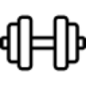

МолекулаАгрегаторы нейросетей
Молекула объединяет модели для текстов, изображений, видео и музыки. В одном аккаунте можно подобрать инструмент под этап работы, сохранить инструкции проекта и использовать готовые роли.
К задаче в МолекулеРаздел «Здоровье»: варианты ИИ для этой задачи, описания возможностей и переходы к обзорам. Сравните несколько решений на одинаковом примере.
Соберите собственные записи о самочувствии в короткую последовательную заметку для врача. Это работа с вашим текстом: Молекула помогает выделить сведения и вопросы, а оценку состояния, диагноз и выбор лечения оставляет медицинскому специалисту на приёме.
Упорядочи мои записи о самочувствии для разговора с врачом: наблюдения, даты и вопросы. Не объясняй причины симптомов, не ставь диагноз и не рекомендуй лечение. Сохрани исходные сведения без добавлений.
Молекула объединяет модели для текстов, изображений, видео и музыки. В одном аккаунте можно подобрать инструмент под этап работы, сохранить инструкции проекта и использовать готовые роли.
К задаче в МолекулеСравнивать «AweMyFace» с другими инструментами раздела «Здоровье» удобнее на одинаковом исходном материале.

Сравнивать «Gymgenie» с другими инструментами раздела «Здоровье» удобнее на одинаковом исходном материале.
Сравнивать «iiMed» с другими инструментами раздела «Бизнес» удобнее на одинаковом исходном материале.
«Inner Lighthouse» представлен в разделе «ИИ-ассистент». При выборе проверьте нужную операцию и условия работы с результатом.
«Livewello» разбирает данные для рабочего анализа.
Для «Mentalyc» сначала определите свою задачу и требуемый результат. Карточка относится к направлению «Здоровье».
Сравнивать «proudP» с другими инструментами раздела «Здоровье» удобнее на одинаковом исходном материале.
VPT.FIT подготавливает индивидуальные планы тренировок с участием ИИ и тренеров. Программы предназначены для одного пользователя или команды, учитывая заданные цели занятий. Инструмент относится к организации тренировочного процесса, в котором личный план дополняет рассмотрение задач участников в выбранной спортивной практике.
«AI Health Mind» представлен в разделе «Здоровье». При выборе проверьте нужную операцию и условия работы с результатом.
Для «Bobby Chat» сначала определите свою задачу и требуемый результат. Карточка относится к направлению «Нейрокоучи».
CalmMind предоставляет ИИ-инструменты для работы с личным благополучием и эмоциональным состоянием. Система поддерживает разговор и размышления, а также специально подготовленные программы. Аналитические сведения и наблюдение за прогрессом дополняют индивидуальный процесс, чтобы пользователь мог возвращаться к своим записям и обсуждаемым вопросам.
«Eatch Technologies» работает с задачами планирования питания.
Flourish предлагает личные разговоры с ИИ и средства работы с эмоциональным состоянием. В продукте представлены психологические оценки и управление стрессом. Отдельное направление связано с продуктивностью, позволяя рассматривать повседневные задачи вместе с поддерживающим диалогом и вопросами личного благополучия пользователя.
Для «Lucidly» сначала определите свою задачу и требуемый результат. Карточка относится к направлению «Здоровье».
Сравнивать «Webiomed» с другими инструментами раздела «Здоровье» удобнее на одинаковом исходном материале.
Для «AI2DocReview» сначала определите свою задачу и требуемый результат. Карточка относится к направлению «Здоровье».
«Binaural Beats Factory» представлен в разделе «Аудио (голос и музыка)». При выборе проверьте нужную операцию и условия работы с результатом.
Сравнивать «Care Mentor AI» с другими инструментами раздела «Здоровье» удобнее на одинаковом исходном материале.
«Eat Smart» работает с задачами планирования питания.
Hairgen AI использует фотографию для визуального примера того, как может выглядеть изменённая линия роста волос после пересадки. У сервиса есть требования к загружаемому снимку. Полученное изображение помогает обсуждать внешний вариант, но его следует отличать от медицинского прогноза и решения о подходящем способе лечения.
Для «Hyperficient» сначала определите свою задачу и требуемый результат. Карточка относится к направлению «Здоровье».
Для «MedLM by Google» сначала определите свою задачу и требуемый результат. Карточка относится к направлению «Разработка».
Сравнивать «Ubie AI Symptom Checker» с другими инструментами раздела «Здоровье» удобнее на одинаковом исходном материале.
Сравнивать «Yuna AI» с другими инструментами раздела «Нейрокоучи» удобнее на одинаковом исходном материале.
Для «CalorieCounter.Pro» сначала определите свою задачу и требуемый результат. Карточка относится к направлению «Здоровье».
«CODIO» помогает готовить изменения программного кода.
«Leftovers AI» подготавливает идеи рецептов.
MealForMe предлагает варианты еды с учётом предпочтений и диетических потребностей пользователя. ИИ-инструмент также отслеживает показатели здоровья. Назначение связано с персональными пищевыми рекомендациями и наблюдением за заданными сведениями, без подтверждения медицинского эффекта выбранного питания или обоснованности каждой рекомендации для конкретного человека.
Сравнивать «Medgic» с другими инструментами раздела «Здоровье» удобнее на одинаковом исходном материале.
«Skinive - AI Dermatologist app» представлен в разделе «Здоровье». При выборе проверьте нужную операцию и условия работы с результатом.
AIminded предлагает ИИ-инструменты работы с изображениями в контексте планирования онкологического лечения. Описанные возможности относятся к профессиональному медицинскому процессу. Перед применением нужно выяснить назначение конкретного модуля и требования к данным; выводы требуют проверки квалифицированным специалистом и не являются основанием для самостоятельного выбора лечения пациентом.
Everbility помогает эрготерапевтам готовить профессиональную документацию и работать с материалами о клиентах. Инструмент ориентирован на письменную часть практики. Перед применением уточните допустимость передачи сведений и необходимые формы; каждую запись должен проверить специалист, поскольку черновик не подтверждает фактическое выполнение процедуры или корректность клинического вывода.
Для «Getactyv» сначала определите свою задачу и требуемый результат. Карточка относится к направлению «Здоровье».
«iHairium» представлен в разделе «Здоровье». При выборе проверьте нужную операцию и условия работы с результатом.
MedLabReport готовит персональное пояснение к результатам медицинских обследований. ИИ-инструмент анализирует разные типы результатов и отправляет отчёт на почту пользователя. Сценарий сосредоточен на письменном разборе предоставленного материала, когда сведения обследования преобразуются в индивидуальное изложение и доставляются по электронному почтовому каналу.
Сравнивать «System Pro» с другими инструментами раздела «Здоровье» удобнее на одинаковом исходном материале.
AIvocado распознаёт блюда на фотографиях и помогает обсуждать питание с ИИ-помощником. Приложение подбирает рекомендации с учётом пользователя и готовит отчёты о рационе. Такая работа объединяет запись еды, индивидуальную диетическую поддержку и наблюдение за изменениями питания во времени.
Сравнивать «Atom Limbs» с другими инструментами раздела «Здоровье» удобнее на одинаковом исходном материале.
Сравнивать «Avey» с другими инструментами раздела «ИИ-ассистент» удобнее на одинаковом исходном материале.
Сравнивать «MacrosAI» с другими инструментами раздела «ИИ-ассистент» удобнее на одинаковом исходном материале.
Сравнивать «Medvise» с другими инструментами раздела «Здоровье» удобнее на одинаковом исходном материале.
«Pet-Knowing» помогает разбирать сведения о домашних животных.
Reassurance предоставляет чатбота Сай для общения о переживаниях и самоанализа. Помощник отвечает персонально, использует формат активного слушания и позволяет вести дневник. В предусмотренный сценарий входит обращение к профессиональной поддержке при необходимости, поэтому разговорное сопровождение связано с записью наблюдений пользователя о себе.
Sage предоставляет персонального ИИ-помощника по вопросам здоровья через приложение обмена сообщениями. Пользователь получает рекомендации с учётом собственного образа жизни и намеченных целей. Работа происходит в разговорном формате, связывая повседневное общение в мессенджере с обсуждением личных привычек и выбранных изменений.
Для «Sugar Free» сначала определите свою задачу и требуемый результат. Карточка относится к направлению «Личный помощник».
Сравнивать «X-ray Interpreter» с другими инструментами раздела «Здоровье» удобнее на одинаковом исходном материале.
A.I Meal Planner помогает организовать питание через индивидуальные планы и набор рецептов. Предусмотрены варианты с низким содержанием FODMAP и помощь чат-бота. Продукт связывает планирование еды с подбором подходящего направления рациона, а применимость ограничений и состава меню следует оценивать по личным потребностям вместе со специалистом.
Страница 1 из 3